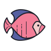

<body [ngClass]="{
    'darkTheme': theme,
    'whiteTheme': !theme,
    'resetAnimation': !animationReset
  }">
  <section>
    <app-section-profile (themeChanged)="updateTheme($event)"></app-section-profile>
    <app-section-study></app-section-study>
    <app-section-experience></app-section-experience>
    <app-section-contact></app-section-contact>
  </section>
</body>
<div class="water-container">
  <div class="water" [style.height.%]="waterHeight">
    <div *ngFor="let fish of fishes"
      class="fish"
      [ngStyle]="{
        '--random-translateY-1': fish.randomVerticalMovements[0] + 'px',
        '--random-translateY-2': fish.randomVerticalMovements[1] + 'px',
        '--random-translateY-3': fish.randomVerticalMovements[2] + 'px',
        '--random-translateY-4': fish.randomVerticalMovements[3] + 'px',
        '--random-translateY-5': fish.randomVerticalMovements[4] + 'px',
        'animation-duration': fish.animationDuration + 's'
      }"
      [style.bottom.%]="fish.bottom">
      
    </div>    
  </div>
</div>